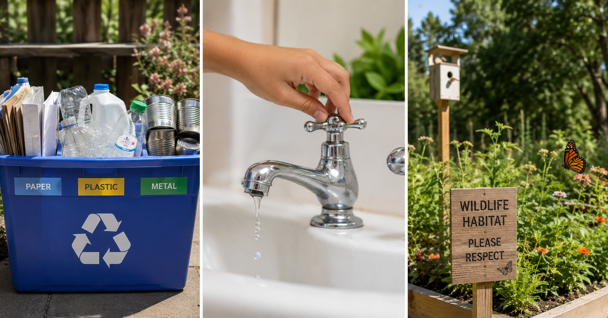

Keep this question in mind as you work. By the end, you should be able to answer it with examples from what you did today.
Start here. Learn the words you will use today.
Think about the last time you saw someone — or something — taking care of the natural world. Maybe a recycling bin. Maybe a nature preserve. Maybe someone turning off a faucet.
There are no wrong answers here. We're just starting to think. You'll come back to these ideas at the end of today's practice.
These are the words scientists and environmental researchers use when they talk about protecting the Earth. Tap each card to flip it and read the definition. You'll need these words in your practice today.
Copy this sentence carefully into your science notebook:
"Conservation means protecting natural resources so they last for future generations."
Now learn the main science idea.

Every day, people throw things away — food packaging, old paper, plastic bottles. But a lot of that waste doesn't have to be waste. RecyclingRecyclingCollecting used materials and turning them into something new instead of throwing them away. turns old materials into new ones. Paper gets made into more paper. Aluminum cans get melted and shaped into new cans.
Even smarter is to reduceReduceUsing less of something so fewer resources are used up or wasted. in the first place — buying less, choosing products with less packaging, and reusing things before throwing them out. Less trash going in means less damage coming out.
Fresh water is not unlimited. Most of the Earth's water is salty — only a small fraction is fresh water we can drink or use to grow food. When people let faucets drip, water lawns during the hottest part of the day, or run dishwashers half-empty, water gets wasted.
Water conservationWater ConservationUsing water carefully and reducing waste so there is enough for people, animals, and plants. means making thoughtful choices: turning off the tap while brushing your teeth, fixing leaky pipes, or planting drought-resistant plants that need less water. These small choices add up fast — a single dripping faucet wastes over 3,000 gallons of water per year.
When land is cleared for buildings or roads, animals lose their homes. When wetlands are drained, birds and fish lose the places where they feed and raise their young. HabitatHabitatThe natural home where a plant or animal finds food, water, and shelter. protection means making sure those places still exist.
Communities protect habitats by setting aside land as nature preserves, planting native plants, and keeping streams and wetlands clean. National parks in the United States protect millions of acres of habitat — places where wildlife can live without being crowded out. Real-World Connection: The Everglades in Florida is one of the most protected wetland habitats on Earth, home to more than 350 species of birds alone.
Not every solution works the same way. Engineers and scientists compare solutions by checking them against criteria (what the solution needs to do) and constraints (limits like time, money, or materials). Here's an example:
| Criteria | 🗑️ School Recycling Program | 🌳 Community Tree Planting |
|---|---|---|
| Reduces waste going to landfill | Yes — paper and plastic get reused | No — doesn't address waste directly |
| Helps local animals | Some — less litter means fewer hazards | Yes — trees provide food and shelter |
| Improves air quality | A little — fewer things burned | Yes — trees clean the air |
| Constraint: cost | Low — bins and signs | Medium — saplings, tools, volunteers |
| Constraint: time to see results | Fast — works right away | Slow — trees take years to grow |
Neither solution is "wrong." The best choice depends on the problem you're trying to solve and the constraints you're working with. A strong claim uses evidence from the comparison to explain which solution fits best.
Humans can take steps to reduce their impact on the environment. Recycling, conserving water, and protecting habitats are all real solutions that make a measurable difference — but only if people actually put them into practice.
Every conservation action has a cause-and-effect relationship: when people reduce waste, landfills shrink. When water is conserved, streams stay fuller. When habitats are protected, wildlife populations recover.
Curious? Go Deeper
The 3 R's — and why order matters. You've probably heard "Reduce, Reuse, Recycle." But most people don't realize that order is intentional. Reducing is more powerful than recycling, because using less means fewer resources are needed in the first place. Reusing is in the middle because it keeps a product in use without creating new waste. Recycling, while important, still uses energy and water. The best conservation practice is the one that happens earliest in the process.
Some scientists study something called the "circular economy" — the idea that waste from one process becomes the raw material for another. In a circular economy, almost nothing gets thrown "away," because there is no "away." Everything loops back. This is how nature already works — leaves fall, decompose, and become soil. Scientists are designing factories and cities to work the same way.
Now test the idea yourself.
You'll need: Your science notebook, a pencil, and the Conservation Action list below. You may also cut out the action strips on a printed sheet if your teacher has provided one.
Below is a list of 12 real conservation actions. Your job is to sort them, rate them, and then choose one to plan out. Work through each step carefully.
Sort the Actions. In your science notebook, draw three columns with these headings: Reduce Waste, Save Water, Protect Habitat. Write each of the 12 actions under the column that fits best. Some actions might fit in more than one place — write it in both and circle your best choice.
Rate the Impact. After sorting, go back and rate each action from 1 to 3 stars. One star = helpful for one person. Two stars = helpful for a neighborhood. Three stars = helpful for an ecosystem or whole community. Write your star rating next to each action and be ready to explain why.
Pick Your Best Action. Choose the one action from the list that you think would make the biggest difference in your community. Circle it. Then write one sentence explaining your choice: why did you pick this one over the others?
Make a Mini Plan. Pretend your school has decided to start doing your chosen action. In 3–5 sentences, write a mini plan: What would you do? Who would need to help? What would change because of it? Use at least two vocabulary words from this lesson.
| Conservation Action | Category | ⭐ Impact Rating (1–3) |
|---|---|---|
| 1. Turn off lights | ||
| 2. Recycle paper & plastic | ||
| 3. Take shorter showers | ||
| 4. Plant native flowers | ||
| 5. Use a reusable bag | ||
| 6. Fix a leaky faucet | ||
| 7. Leave wild yard area | ||
| 8. Compost food scraps | ||
| 9. Full dishwasher only | ||
| 10. Volunteer cleanup | ||
| 11. Less-packaging products | ||
| 12. Install rain barrel |
Think about each of these. Talk through your ideas in your mind or with someone nearby.
Tell the story of your investigation from start to finish — what you sorted, what you found, and what you decided to plan. Explain your reasoning as if you were telling a friend who wasn't in class today.
Think through each question on your own. Write your answers in your science notebook before moving on.
Check what you understand.
Show what you learned.
🔍 Part A — Classify and Identify
Use your completed sort chart from the Practice tab to answer each question below in your science notebook.
🚀 Part B — Short Answer
Answer each question in complete sentences. Use vocabulary from this lesson.
Think about the mini plan you wrote in your notebook. Make a claim: does your chosen conservation action really reduce human impact on the environment? Use what you observed and learned today to support your thinking.
What do you think?
💡 Start with: "I think that [your chosen action] helps the environment because…"
What did you observe or learn that supports your thinking?
💡 Start with: "I know this because during the sort activity, I noticed that…"
Why does that make sense?
💡 Start with: "This makes sense because when humans [action], the result is that…"
Check each item when it's ready. When all boxes are filled, you're done!